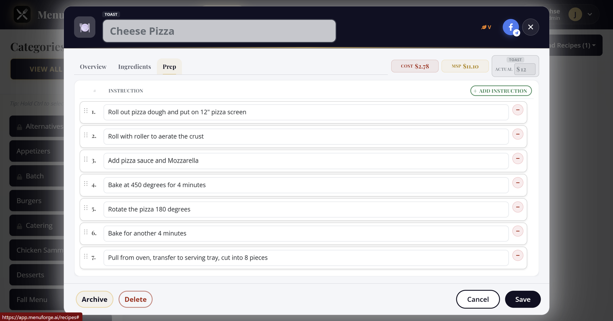

Recipe costing software for independent restaurants
MenuForge is web-based recipe costing software. You enter each ingredient once with the pack size and price you pay, build recipes and batch sub-recipes on top, and MenuForge keeps plate cost, food cost %, and minimum sell price current as prices change. Plans start at $79.95/month.
Real result: Presidential Brewing used MenuForge invoice history to renegotiate their top 10 items and projects about $8,800 a year back. Read the case study.
How the costing works
- Pantry ingredients carry the pack price. A 50 lb sack of flour at $28.40, a 6/#10 case of tomatoes at $41.25. Vendor variants (a GFS case and a Sysco bag of the same item) live on one ingredient.
- Recipes use any unit. Cook in cups, buy by the pound. Unit conversions turn the recipe quantity into a share of the pack you bought.
- Batches nest. House seasoning goes into seasoned beef, which goes into the patty, which goes into the burger. Each batch has its own yield, and the cost flows all the way up.
- The plate cost updates itself. When a pack price changes, every recipe and sub-recipe that uses it recosts. No formulas to chase.

What you see on every recipe
- Plate cost and cost per serving
- Food cost % against your menu price, and the minimum sell price to hit your target
- Required sides from the category (the bun and fries count)
- Vegetarian, vegan, and gluten-free flags rolled up from every ingredient
- Prep steps and dish photos for the line
- A pink card on the recipe grid when a price is missing or a unit will not convert, so you know which costs not to trust yet
Keeping prices current
Prices move every week. On the AI+ and Unlimited plans, you email or upload a vendor invoice and AI matches each line to a pantry ingredient. You confirm anything it could not place, and pack costs update across every recipe. Price history and alerts call out the jumps worth acting on. On Essentials you update pack prices by hand. How invoice processing works.
Who it is for
Independent restaurants, brewery taprooms, and caterers with roughly 20 to a few hundred recipes who are tired of a costing spreadsheet that only one person understands. Each account covers one location. It is not an enterprise inventory suite, and it is not a home-cook recipe app.
Coming from a spreadsheet
There is no spreadsheet import yet. Most kitchens start with their top 10 dishes: add those ingredients once, and AI can draft a recipe from a short description so you are not retyping every tab. Want to see the math first? Try the free plate cost calculator.
Questions
How much does MenuForge cost?
Essentials is $79.95/month, AI+ is $139.95/month, and Unlimited is $189.95/month. Every plan starts with a 7-day free trial of AI+, no credit card required.
Does MenuForge handle sub-recipes?
Yes. Batch recipes can nest inside other batches, each with its own yield, and costs roll up to every dish that uses them.
Can I import my recipe spreadsheet?
Not yet. Most kitchens start with their top 10 dishes and use AI to draft recipes from a short description.
Cost your menu with real pack prices
A fully loaded 7-day free trial of AI+. No credit card. 10 receipts and 5 AI recipes included.
Start 7-day free trial